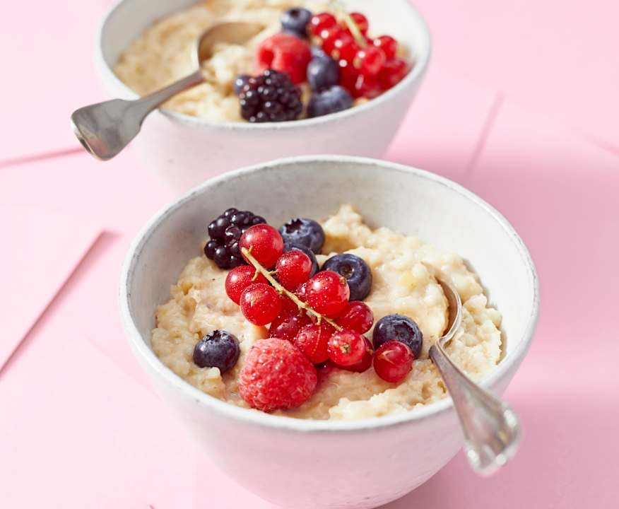

Apfel-Porridge
Von
Cookidoo
Portionen:
4 Portionen
Zubereitungszeit:
20 Minuten
Zutaten
2 Äpfel (ca. 300 g), z. B. Elstar, geviertelt
20 g Zitronensaft
160 g Haferflocken, zart
700 g entrahmte Milch, 0,1 - 0,3% Fett
30 g Agavendicksaft
200 g Beeren, gemischt, frisch
Zubereitung
Die Äpfel mit dem Zitronensaft im Mixtopf 4 Sek./Stufe 8 klein hacken, dann alles vom Rand mit dem Spatel nach unten streichen.
Für feinere Stückchen im Mixtopf nochmals 2 Sek./Stufe 8 nachhacken und erneut nach unten streichen.
Haferflocken, Milch und Agavendicksaft zu den Äpfeln geben und den Brei im Mixtopf 12 Min./90°C/Linkslauf/Stufe 1 garen. Warm in vier Schalen füllen und mit den Beeren belegen.
Bring! Einkaufsliste App für iPhone und Android